One wave, five drawings
agent-worktree-gui 1.195.0, branch wtgui/report-only-row-nothing-lands-no-public-c7afbf, on top of the turnover branch 20261127_2134_TASK-405_row-405-is-the-complete. Report only: nothing under public/ or lib/ changes, no version bump, no push, no pull request. Prepared for row #464 in assistant-3's queue, 2026-11-28.
- the mechanism
- public/core/waves-lane.js:272-300 (lane row, lanes block), :137 (member row), :411-415 (the lane block and the join note)
- the stylesheet
- public/initiatives.css:1077-1170 (lanes, member row, the 900px breakpoint), :1016-1024 (the 196px closing note)
- the painter
- public/assistant.js:4610 (laneHtml inside the initiative card)
- the fold
- lib/waves.js:1253 waveLanes, :1443 deriveWaveState, :1783 stateWord
- the fixture
- tools/initiatives-fixture.mjs, seeded by tools/capture-wave-lane-options.mjs
- the browser
- tools/browser.mjs (Playwright), headless, 1x device scale for the panel, 1x for the stages
- the widths
- the panel's real wave column 1304px at the widest float; the 900px panel gives 804px
- the data
- one wave, two lanes, three members, both gates drawn; one closed wave beneath
1. What this report is, and what it is not
The Initiatives tab draws a wave as a station: a title, a state word, an entry and an exit gate, then its lanes and their members. This report renders the same wave, with the same three members across the same two lanes, five ways. Each drawing is real HTML and real CSS, photographed at the panel's real wave column and at the 900px panel, through the repository's own browser harness and its own fixture. Nothing in the report is a mock: the first option is the panel's current drawing, class for class, and its title and wrap counts match the fixture panel's within a font's rounding. It is the baseline every other option is measured against.
The failure this row is about is not a colour, a font or a spacing. It is a width budget. The member row is a six-column manifest; the lane that holds it is about half the card. The columns are fixed at 44px for the id, the owner chip, 80px for the state, 150px for the project and the reports chip, plus five 8px gaps. That is 404px of the lane's 497px, so the title - the one thing a reader actually reads - is handed 93px. The reader's screenshot shows the result: titles that wrap every two or three words, and a wave box as tall as a paragraph. The fixture measures it in section 2.
The reader's screenshot (2026-11-28T05-50-11-image.png) is this drawing: the same wave, the same two lanes and the same three members. The fixture boots the panel at its widest float (1384x860 layout px at a 1400x1000 window), where the pane measures 1382px, the card 1364px and the wave column 1304px; every number in this report is that fixture's, not a guess at the reader's screen. The titles, ids, lanes and gates in every drawing below are that wave's: #444, #446 and #445, lanes public/index.html and unlaned, entry and exit both no gate, one closed wave beneath.
2. Today, measured
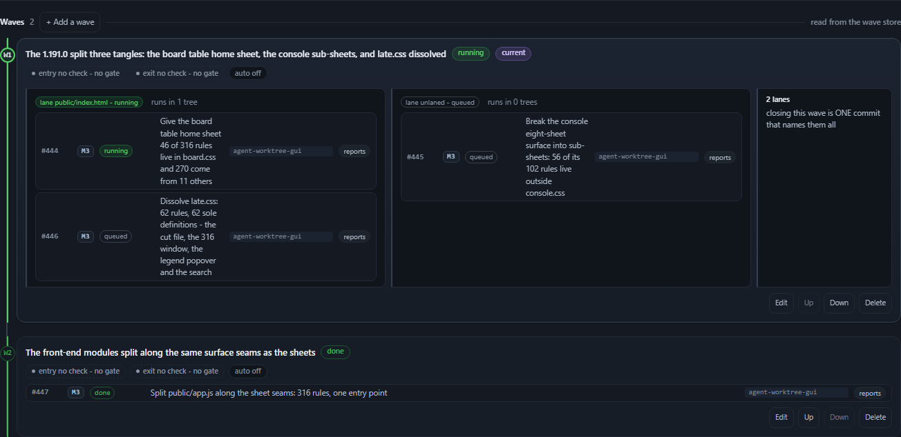
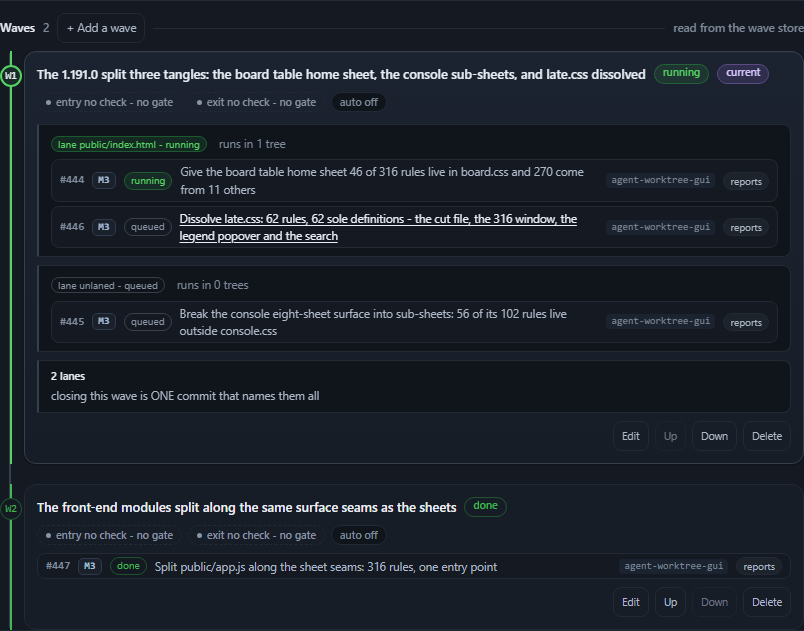
| the real panel | pane | wave column | lane | member title | wraps per title (#444 / #446 / #445) | wave box | member row |
|---|---|---|---|---|---|---|---|
| widest float (1384px) | 1382px | 1304px | 521px | 93px | 6 / 7 / 7 | 413px | grid |
| 900px panel | 882px | 804px | 754px | 419px | 2 / 2 / 2 | 413px | flex |
Two things in that table are worth naming. First, the unreadable case is the wide one: at the widest float the two lanes share the card, each lane is 521px, the member row is a grid, and the title gets 93px. Second, at the 900px panel the lanes stack and the row falls back to the wrapped flex drawing, so its title gets 419px and two lines - the wave box is still 413px tall, but its height now comes from stacking the lanes, not from wrapping the words. The box height alone would hide the defect; the title width and the wrap count are the numbers that show it.
The O1 stage in section 3 is this drawing, class for class: its title measures 90px against the panel's 93px (the same 404px of fixed columns, a font's rounding) and its box 418px against 413px (the stage's controls row is a few px taller). It is what the other options are measured against, not a mock.
The closed wave beneath proves where the fault is. It holds one member and no lane of its own, so its member row is drawn at the card's full width; its title gets the whole flexible track and reads in one line. The same row, the same CSS, the same font: the only difference is that the lane above it is half the width.
The measurements in this report were taken on 2026-11-28 by node tools/capture-wave-lane-options.mjs. The ledger is docs/reports/wave-lane-options/measurements.json; the stages are static HTML in this file, photographed through the same Playwright harness as the panel. The fixture's home is a scratch directory, never ~/.wag, and the capture never opens a socket to the reader's 7331 listener: it reads that listener's pid from netstat only, never from the panel. The run recorded the same listener before and after (pid 30056, from netstat only; the ledger holds the pair), and the fixture's own panel is on a random port, asserted not 7331: no socket to 7331 is opened by the tool.
3. Five mechanisms
| lane | members | the lane's read |
|---|---|---|
| public/index.html | #444 running (M3, agent-worktree-gui), #446 queued (M3, agent-worktree-gui) | runs in 1 tree |
| unlaned | #445 queued (M3, agent-worktree-gui) | runs in 0 trees |
The wave's entry gate and exit gate are both no check - no gate, its switch is off, it owes the join (2 lanes), and its state is running because #444 is. Beneath it, the closed wave The front-end modules split along the same surface seams as the sheets holds one done member (#447) and no lane of its own, so it is the control: the same member row at the card's full width.
Every option below draws the same wave and the same closed wave beneath it. The captures are the option's own stage at 1304px (the real wave column) and at 804px (the wave column inside a 900px panel). The numbers under each drawing are measured from that drawing, not copied from the panel.
O1 - Station boxes, six-column member row
Today's drawing. Each lane is a box; every member is one six-column grid row: a 44px id, the owner chip, an 80px state, the title as the only flexible track, a 150px project tag and the reports chip. The lanes sit side by side while the pane is at least 900px, with the 196px closing note beside them.
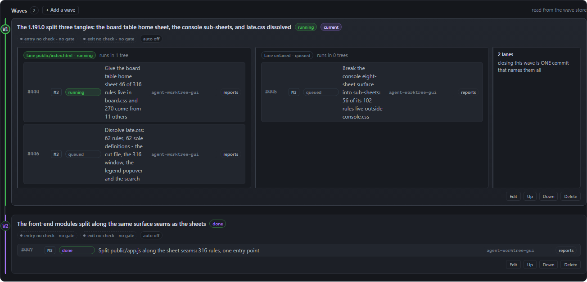
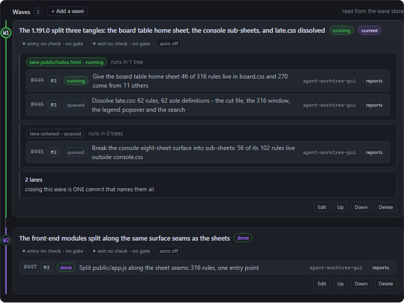
Why it works, or does not
The columns are fixed and the lane is not. At the pane's real width each lane measures 521px, its content 497px, and the fixed columns plus gaps ask for 404px, so the title track is handed the 93px that is left. The title is where the reader reads.
What it costs
No change. This is the baseline every other option is measured against.
What it risks
131 characters of title in a 93px column: 6 to 7 wrapped lines per member and a 413px wave box. The state and the owner still line up, which is why the defect survives review: the row looks ordered while the words are unreadable.
O2 - Lane bands, full-width manifest row
The lanes stop sharing the width. Each lane becomes a full-width band, one above the other, and the member row keeps today's six-column manifest. Because every band is as wide as the card, the fixed columns never crowd the title.
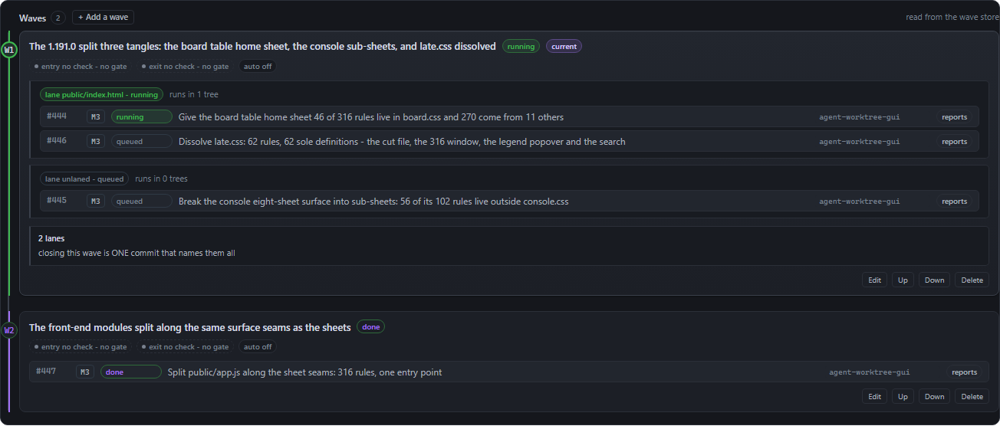
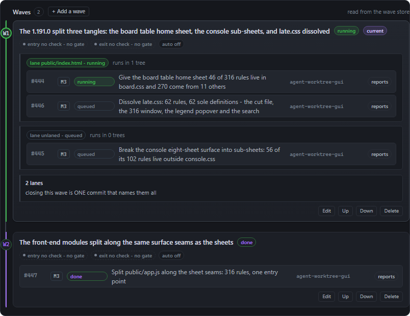
Why it works, or does not
One column change in the lane container, and the member grid is drawn at the band's width instead of only above a 900px pane. The row, its chips and its markup are untouched; the title track takes the width the band now has.
What it costs
The lanes are no longer side by side at any width, so the wave stops showing that its work runs in parallel. The closing note has to move under the lanes at every width.
What it risks
The wave grows taller as lanes are added, and a reader scanning two lanes has to compare down the page rather than across. The 2-lane close is still stated in words, but the picture no longer carries it.
O3 - Manifest table, lane as a column
No lane boxes at all. One table holds every member, sorted by lane, with a 120px lane column that names the lane on its first row and a dot on the repeats. A summary strip above the table keeps each lane's state and read sentence in one line.
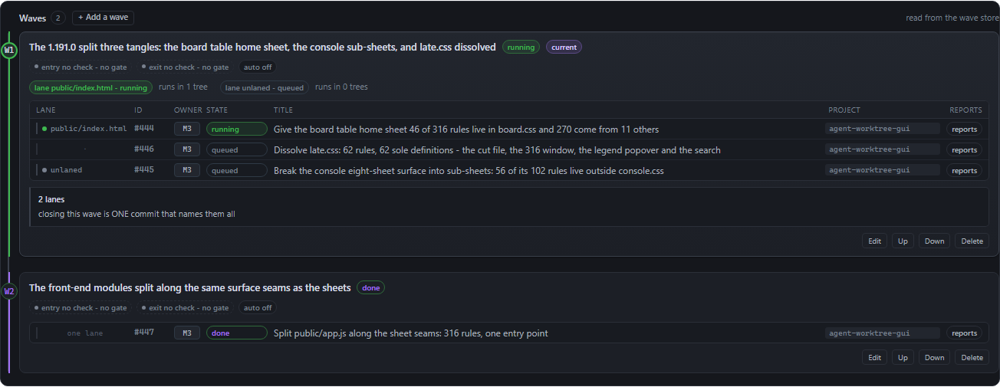
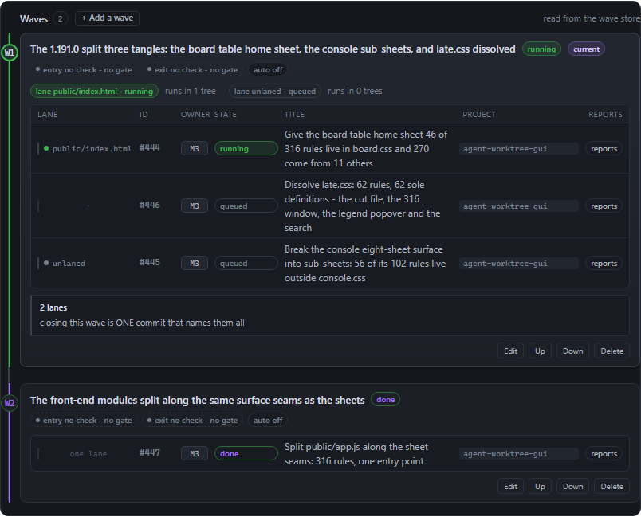
Why it works, or does not
A flat table gives the title the widest track of any option, and every member is one row, so three members compare down a single column. The lane is data in a column, not a container.
What it costs
The lane's own block, its left border and its read sentence are replaced by a summary strip and a column. That is new markup, not a CSS-only change, and the panel's lane identity becomes a cell value.
What it risks
The grouping is weaker: a reader follows the lane column rather than seeing two islands of work. Repeating the lane name darkens the table, and the summary strip can drift from the rows if a later change paints them separately.
O4 - Two-line cards, lane width for the title
The lanes stay side by side. Each member becomes a two-line block instead of a six-column row: the title takes the whole lane width on the first line, and the id, owner, state, project and reports chip follow on a second, wrapping meta line.
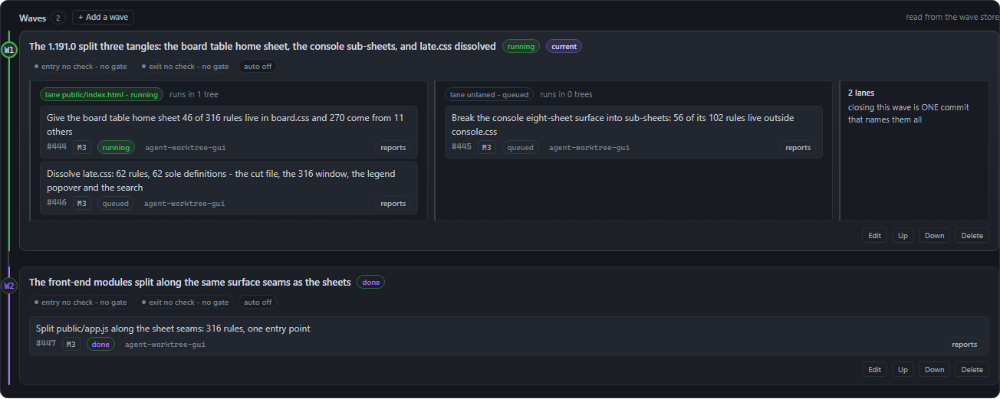
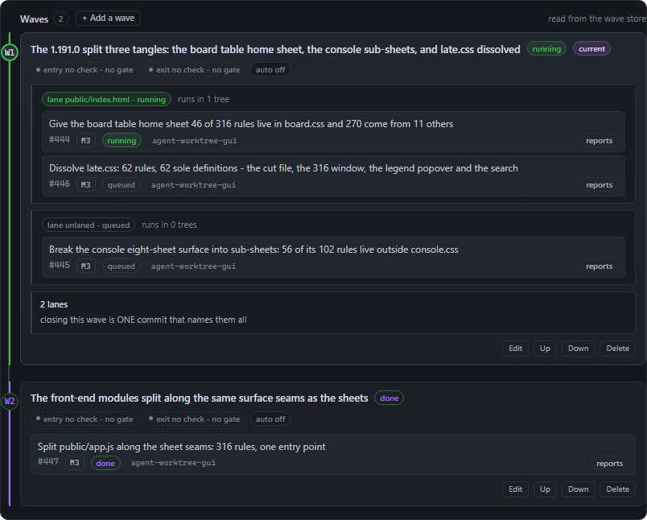
Why it works, or does not
The title is the only thing that needs width, and it gets the lane's full content width: 475px inside the card's padding at the real pane. The chips keep their meaning and their order; they stop being columns, which is what was squeezing the words.
What it costs
One member rule block. The markup order stays the same, the chips keep their order, and no JS changes. At a pane below 900px the lanes already stack, so the drawing has one narrow case to keep readable.
What it risks
Members no longer align chip-for-chip down a column, so comparing two members' owners takes a second look. A very long project name can push the reports chip to a third line, and the wave grows a little with each member.
O5 - Lane matrix, members aligned by slot
The lanes are columns and their members are aligned by ordinal: the first member of each lane shares a row, the second shares the next. A lane with no member at that slot shows an empty cell. Each cell is a two-line tile, title first.
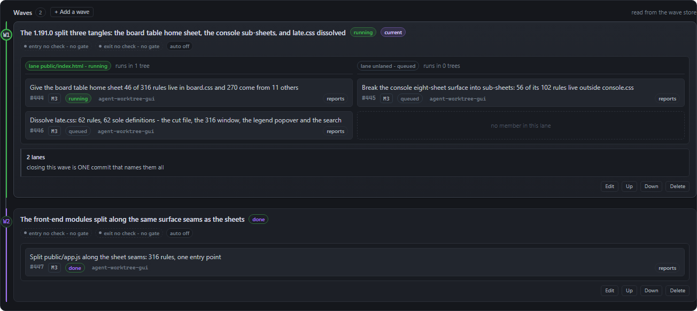
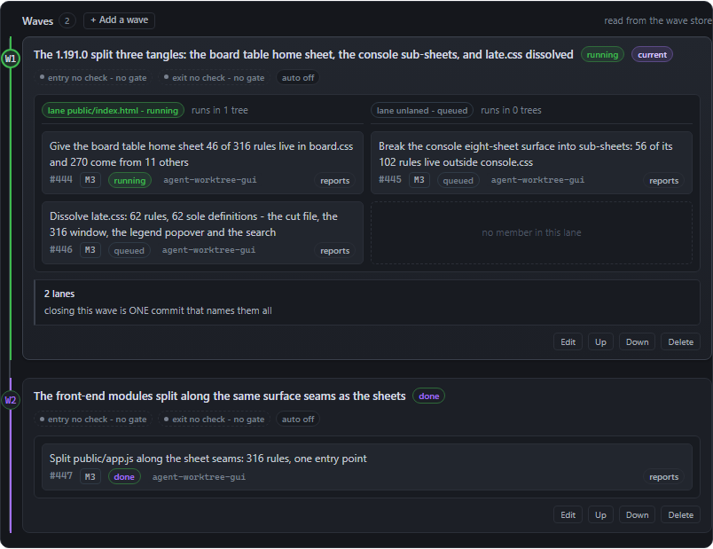
Why it works, or does not
This is the only drawing that shows the wave's parallel structure directly: what lane A is doing at stage 1 sits beside what lane B is doing at stage 1. It is the picture of a join, not a list of members.
What it costs
New markup and a transposed reading order. It pays off only when the lanes run in lockstep and hold comparable members; uneven lanes leave empty cells.
What it risks
A screen reader now reads across lanes, not down one, so the lane grouping survives visually but not in DOM order. Empty slots are honest but they take space, and at the 900px pane each cell is narrow enough that the longest title wraps two lines.
4. Side by side
The same numbers for every drawing, at both widths. "Title" is the width of the member title's box on the widest of the three members; "wraps" is the line count for #444 / #446 / #445; "wave box" is the height of the first wave's station box.
| option | mechanism | title at 1304px | wraps | wave box | lanes | title at 804px | wraps | wave box |
|---|---|---|---|---|---|---|---|---|
| O1 | Station boxes, six-column member row | 90px | 7 / 7 / 7 | 418px | side by side | 407px | 2 / 2 / 2 | 392px |
| O2 | Lane bands, full-width manifest row | 822px | 1 / 1 / 1 | 346px | stacked bands | 322px | 2 / 2 / 2 | 394px |
| O3 | Manifest table, lane as a column | 711px | 1 / 1 / 1 | 295px | one table | 211px | 3 / 4 / 3 | 421px |
| O4 | Two-line cards, lane width for the title | 475px | 2 / 2 / 2 | 288px | side by side | 707px | 1 / 1 / 1 | 413px |
| O5 | Lane matrix, members aligned by slot | 595px | 1 / 1 / 1 | 329px | two columns | 345px | 2 / 2 / 2 | 365px |
The spread is the finding. Today's title track is 90px at the real column and wraps 7 / 7 / 7 times; a full-width manifest row (O2) hands the title 822px and one or two lines; the table (O3) gives 711px; the two-line card (O4) gives 475px, which is the lane's whole content width; the matrix (O5) gives 595px per cell. At the 900px panel every option is readable, so the choice is not about the narrow case: it is about what the wave must still show when the panel is at its widest.
None of the five overflows its stage at either width. That matters because a title track that collapses to zero does not wrap: it overflows, and an overflow is the one failure a screenshot can hide under a scrollbar that is not there.
5. The trade-offs, numbered
- O1, the current drawing. Keep it only if the panel is never wider than about 900px. At the widest float the title track is 90px and the members wrap 7 / 7 / 7 times; the row's alignment is real, but it aligns chips around words nobody can read. This is the baseline, not a candidate.
- O2, lane bands. The widest title of any option that keeps a lane block (822px) and the smallest CSS change, but the lanes are stacked at every width, so the wave stops showing that its work is parallel. Choose it if the reader reads lanes one at a time and never compares them; that is not how this wave closes.
- O3, the manifest table. The most compact of the five and the easiest to scan down a column (711px titles, 295px box). It is also the largest change: the lane's box, its read sentence and its left border become a column value and a summary strip, so the lane stops being a thing on the card and becomes a fact in a table. At the 900px panel its seven columns squeeze the title to 211px and 3 / 4 / 3 wraps. A good second choice if density matters more than the lane's identity.
- O4, the two-line card. The candidate this report recommends: 475px title at the real column, lanes still side by side, one rule block, no markup change. Its cost is the column alignment of the chips, which is the smallest thing any of these options gives up.
- O5, the lane matrix. The only drawing that aligns the lanes row for row, so stage 1 of one lane sits beside stage 1 of the other (595px cells, 329px box). It pays off when lanes run in lockstep; here one lane has two members and the other one, so it draws an empty cell and a row-wise reading order. Keep it for a wave whose lanes are stages of one pipeline, not for this one.
6. The recommendation
Before it lands, the implementer would prove
- At the real wave column (1304px), every member title measures at least 400px and wraps at most three lines; the wave box for three members stays under 300px.
- At the 900px panel, the lanes stack and the title keeps at least 400px; no stage overflows horizontally at either width.
- The member row still draws id, owner, state, title, project and reports in that order, and the reports chip still takes the right edge.
- Every word is still the route's: the state, the gate words, the lane read and the join sentence are unchanged by the drawing.
- The closed wave beneath keeps its full-width row: it is the control that proves the row is fine when it has the width.
Adopt O4, the two-line card, and keep the lanes side by side
O4 is the only option that keeps each lane's own block and the two lanes side by side while giving the title the lane's full width; the close still reads as two parallel lanes that one commit names together. At the real wave column each lane is 521px, the title takes 475px and reads in 2 / 2 / 2 lines instead of 7 / 7 / 7; the wave box falls from 418px to 288px. At the 900px panel the lanes stack and the same card reads in 1 / 1 / 1 lines with 707px. The change is one member rule block: no markup change, no JS, no new state.
The two-line card also keeps the row's order - id, owner, state, title, project, reports - which is the order row 295 settled on. It stops being a column alignment, and that is the trade: comparing two members' owners now takes a glance at a meta line instead of a column. That is a smaller cost than a title that cannot be read.